Dubové postele z masivu
Robustní dvoulůžka z masivního dubu o tloušťce 42 mm. Dub je nejtvrdší dřevina z naší nabídky a roky vydrží vzhled i pevnost.
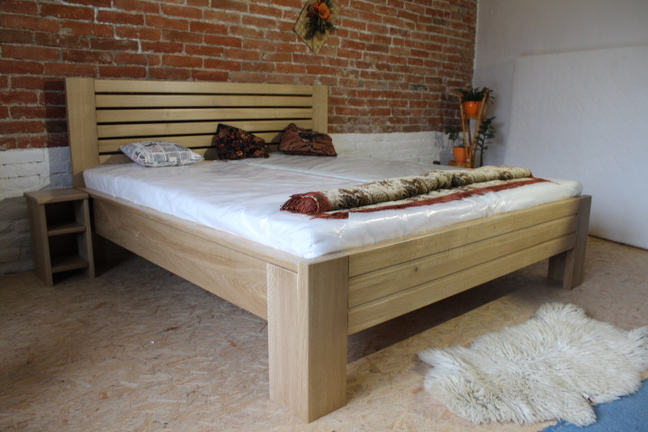
Dubové dvoulůžko Michaela
Luxusní robustní dvoulůžko z masivního dubu pro náročné s tloušťkou materiálu 42mm.
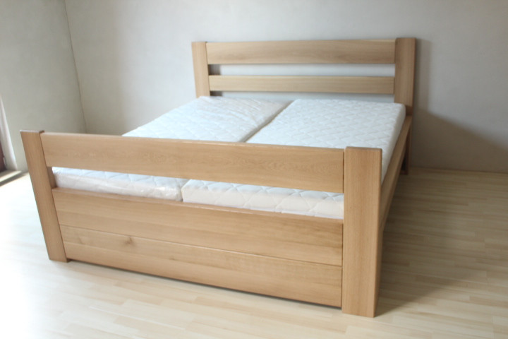
Dvoulůžko Marika
Robustní dvoulůžko z masivního dubu pro náročné s tloušťkou materiálu 42mm.
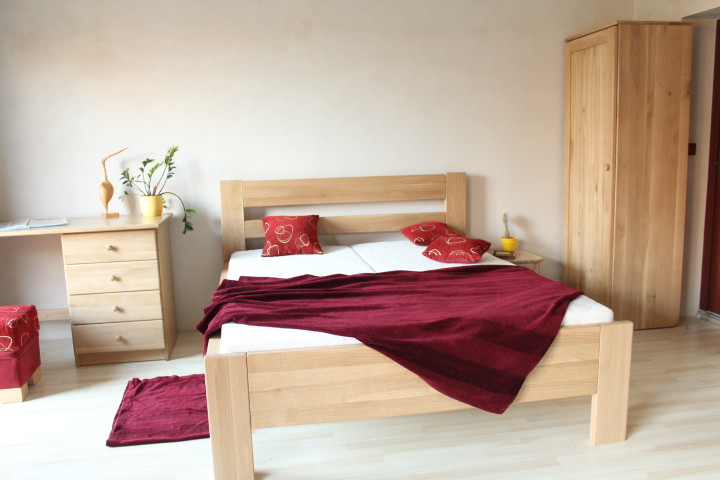
Dvoulůžko Magda
Robustní dvoulůžko z masivního dubu pro náročné s tloušťkou materiálu 42mm.
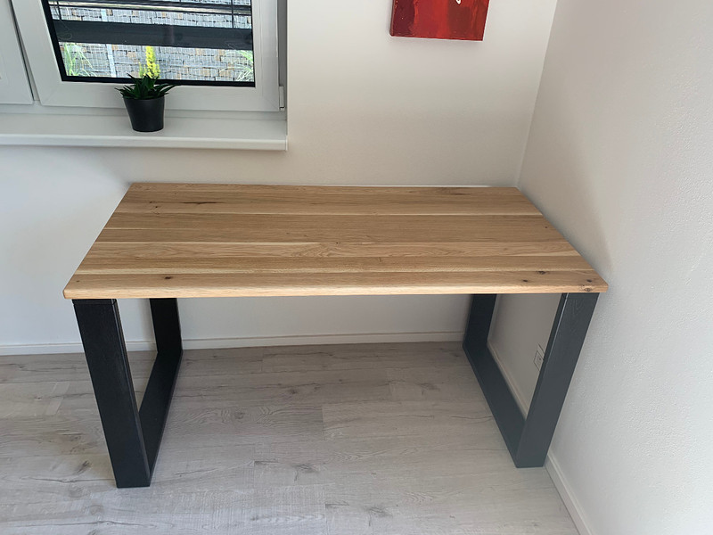
Dubový jídelní stůl Denisa
Celodubový jídelní stůl stolová deska v úpravě olej Legno od fi. Adler vhodný na potraviny.
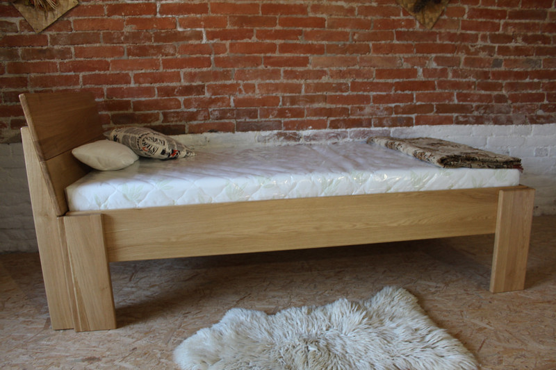
Šikmé ČELO! Jednolůžko typ Manita
Dubové jednolůžko se šikmým čelem pro lepší komfort při sezení v posteli.
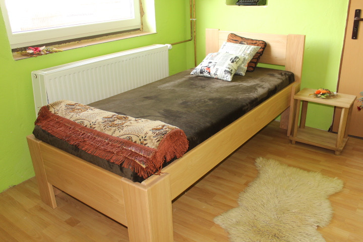
Jednolůžko Petra
Dubové jednolůžko s čelem typ Petra.
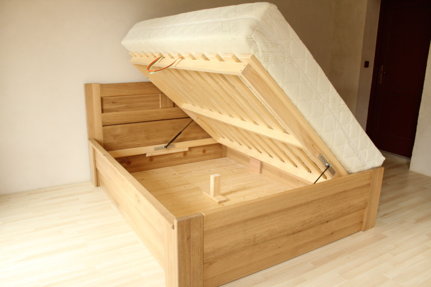
Jeden a půl lůžko Marta s vestavným úložným prostorem
Robustní dvoulůžko malé s vestavným úložným prostorem.
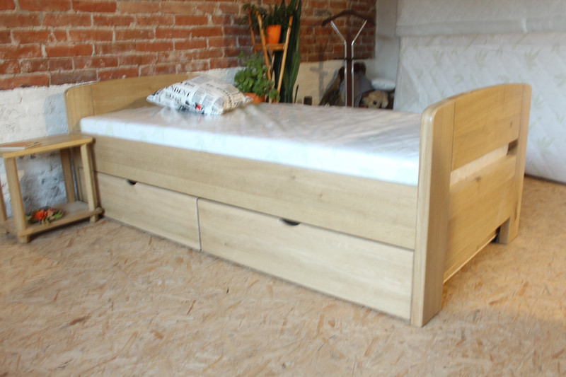
Robustní postel Beáta double vysocezátěžová
Luxusní dubové jednolůžko s plnýmy čely, ze silného materiálu o tl. 42mm včetně bočnic.
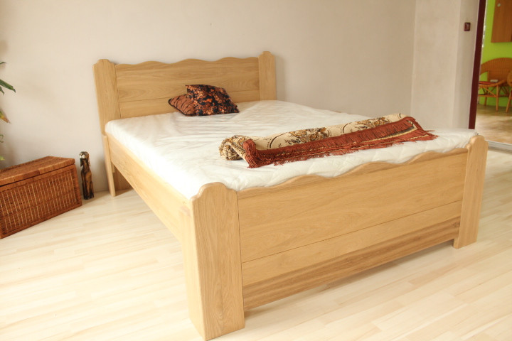
Vyřezávané dubové dvoulůžko malé Mariana
Vyřezávané dubové menší dvoulůžko v rozměrech na matraci 140x200cm o tl. materiálu 27mm.
Zobrazit dalších 6 modelůSkrýt dalších 6
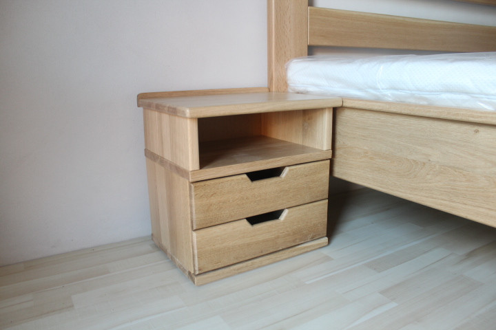
Noční stolek Robin
Dubový noční stolek, tl. materiálu 26mm.
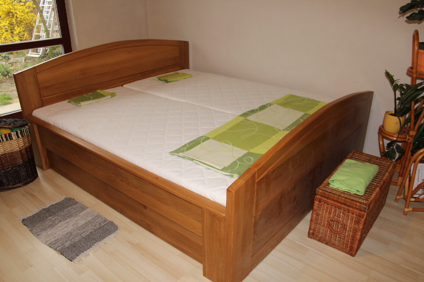
Dubové dvoulůžko Adriana double
Manželské robustní dvoulůžko s vestavným úložným prostorem pro náročné.
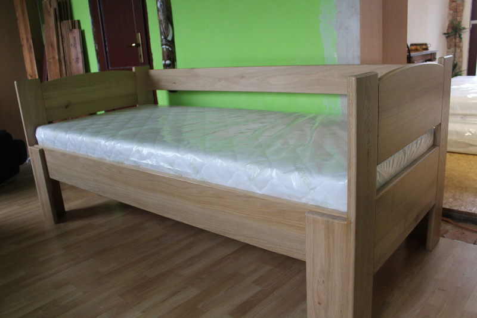
Jednolůžko Soňa double
Postel z masivního přírodního dubu s dvěmi čely a zadní deskou ke zdi.

Dubová šatní skříň
Vysoká celomasivní šatní skříň z přírodního dubu, rozměry celkové: š.70 x hl.54 x v200cm.
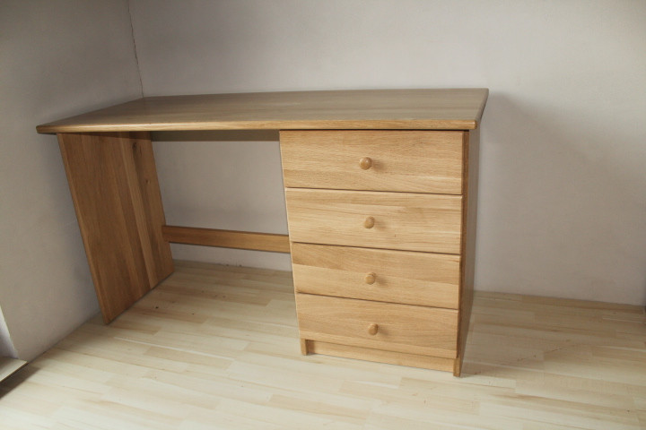
Dubový psací stůl Klasik
Psací stůl z dubového masivu.
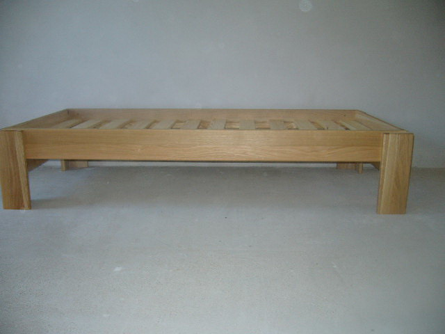
Jednolůžko Dita dub
Klasické jednolůžko bez vyšších čel z masivního dubu, rozměry na matraci 90x200cm nebo 80x200cm.
Časté dotazy
Jak silný je masiv u dubových postelí?
Dubová dvoulůžka mají tloušťku materiálu 42 mm.
Jak je dub povrchově upravený?
Dub ošetřujeme olejem.
Jakou nosnost mají dubové postele?
Nosnost dvoulůžek je nad 400 kg. Přesná hodnota je u každého modelu.
Chcete jiný rozměr nebo provedení?
Napište nebo zavolejte. Vyrobíme podle vašich rozměrů, nákresu nebo fotky.